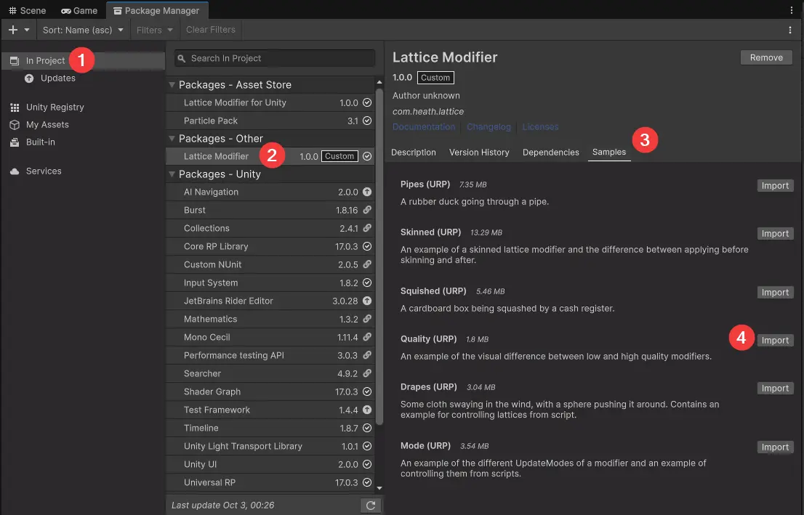
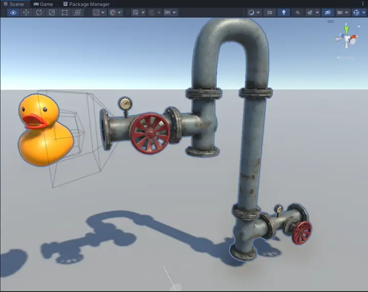
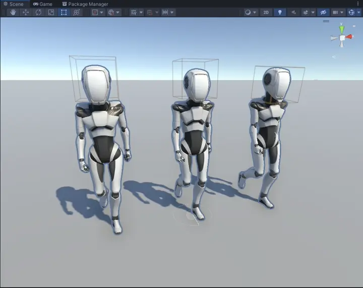
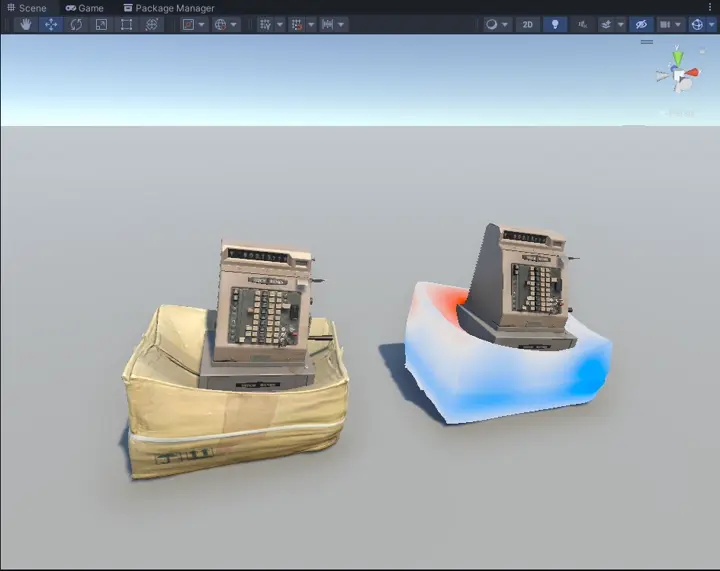
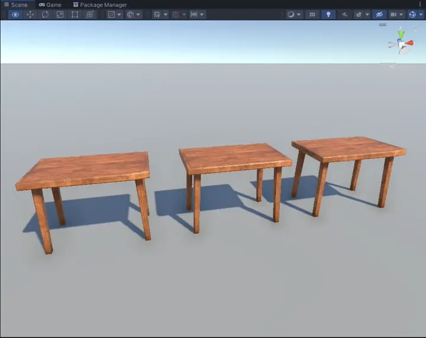
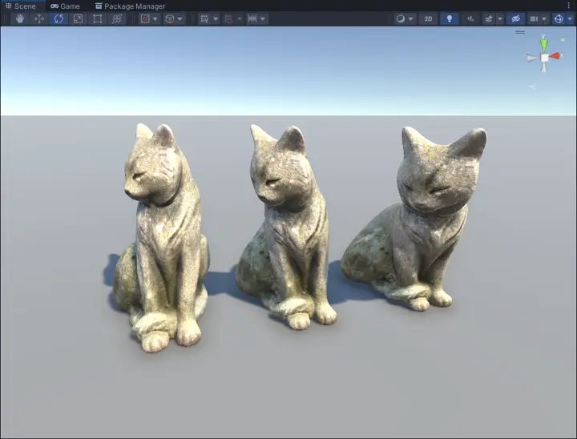

Included Samples
The following samples are provided with the asset. You can import them from the Package Manager:
- Open the
In Projecttab - Select
Lattice ModifierunderPackages - Other - Go the the
Samplestab - Import your desired sample

Important
These samples have been made in the Universal Render Pipeline (URP). It is recommended you create a URP project to open them. If you import them into a project using a different render pipeline you will need to swap the materials and/or shaders.
Pipes
An example animation using Lattices and Lattice Modifiers.

Skinned
Demonstrates the use of Skinned Lattice Modifiers, and the different applications methods. Pre-skinning vs post-skinning, and attaching Lattices to the skeleton.

Squished
Demonstrates reading stretch and squish in custom shaders. Two shaders are included, one written in ShaderLab/HLSL and one created in Shader Graph.

Quality
Demonstrates the difference with High Quality enabled and disabled and the difference with Global enabled and disabled.

Drapes
An example of controlling a lattice using scripts. The Lattice is controlled via script to emulate wind.

Mode
An example of the different UpdateModes of a modifier and an example of controlling them from scripts.
